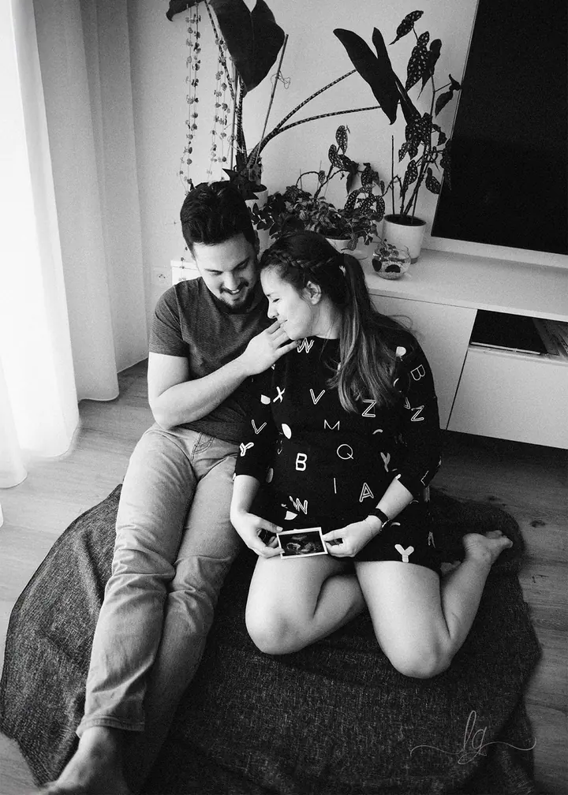
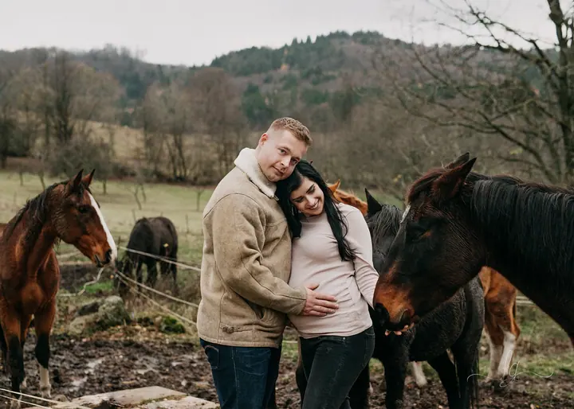

Těhotenské focení
Fotky bříška v přirozeném světle a bez strojených póz, doma, v kavárně, v parku nebo v lese. Nejlepší je fotit mezi 28. a 36. týdnem, kdy je silueta nejhezčí.

Jmenuji se Lucy Grossmann a v Praze fotím těhotenství, miminka v jejich prvních dnech doma a celé rodiny. Nehledám strojené pózy, ale pohodu, smích a přirozené světlo.
Rezervovat termínJmenuji se Lucy, pocházím ze Slovenska a žiju a fotím v Praze. Fotoaparát mám v ruce od roku 2013. Zpočátku jsem fotila úplně všechno, dnes už ale vím, kde je moje místo: pohodové těhotenské focení, klidná newborn focení u vás doma, miminka, která se učí sedět, a rodiny, které se spolu umí zasmát.


Strojené pózy ani zbytečné rekvizity nemám ráda. Spíš vás nechám povídat si, smát se a být spolu a mezitím fotím v přirozeném světle. Před focením společně probereme nápady, ráda vám doporučím hezké místo a poradím i s oblečením.
Na úpravě fotek si dávám opravdu záležet. Žádnou fotku nepustím dál, dokud nejsem přesvědčená, že vypadá skvěle. Hlavně si ale přeji, abyste si focení užili a cítili se při něm dobře.
Co fotím
Fotky bříška v přirozeném světle a bez strojených póz, doma, v kavárně, v parku nebo v lese. Nejlepší je fotit mezi 28. a 36. týdnem, kdy je silueta nejhezčí.
Vaše miminko v prvních dnech, v klidu a bezpečí vašeho domova. Ideální je fotit během prvních 2 až 3 týdnů po porodu.
Miminka rostou hrozně rychle, a tak stojí za to zachytit první zvedání hlavičky i vratké pokusy o sezení.
Láska, smích a teplo domova bez umělých póz. Jen skutečné chvíle, ke kterým se budete rádi vracet.
Fotografie jsou ilustrační
Postup
Na půlhodinovém online hovoru si řekneme, jak si focení představujete, a probereme nápady i oblečení.
Společně vybereme místo, kde se budete cítit dobře: váš domov, kavárnu, zahradu nebo park. Termín přizpůsobíme fázi těhotenství nebo věku miminka.
Na focení máme 2 až 4 hodiny, takže zbyde čas na odpočinek, povídání i převlečení. Žádný spěch a žádné nucené úsměvy.
Každou fotku pečlivě upravím a dostanete celý příběh, minimálně 25 fotek ve vysokém rozlišení.
Otázky
Těhotenské focení je ideální mezi 28. a 36. týdnem, ozvěte se klidně už v prvním trimestru. Na newborn focení se domluvte ještě během těhotenství, fotíme v prvních 2 až 3 týdnech po porodu. Na focení miminka nebo rodiny stačí 3 až 4 týdny předem.
Mám jeden přehledný balíček za 9 900 Kč (396 EUR). Zahrnuje 30minutovou online konzultaci se stylingem, 2 až 4 hodiny focení, alespoň 25 upravených fotek ve vysokém rozlišení a dopravu do 100 km od Prahy. Pokud nebudete spokojení, vrátím vám celou platbu.
Hlavně něco pohodlného a nadčasového. Hodí se jemné pastelové nebo zemité tóny, splývavé šaty nebo klasika v podobě džínů a bílé košile. Velkým logům a výrazným vzorům se raději vyhněte a s partnerem a dětmi se sladťe v podobných odstínech.
Pak můžeme vyrazit do světlého ateliéru s denním světlem, k přátelům nebo rodině, nebo třeba do světlé chalupy. Hlavní je, abyste se tam cítili uvolněně.
Fotím ve všech pražských čtvrtích i v okolí, například v Roztokách, Černošicích, Průhonicích nebo Hostivicích. Do 100 km od Prahy je doprava zdarma, delší cesty po Česku i do zahraničí rádi probereme.